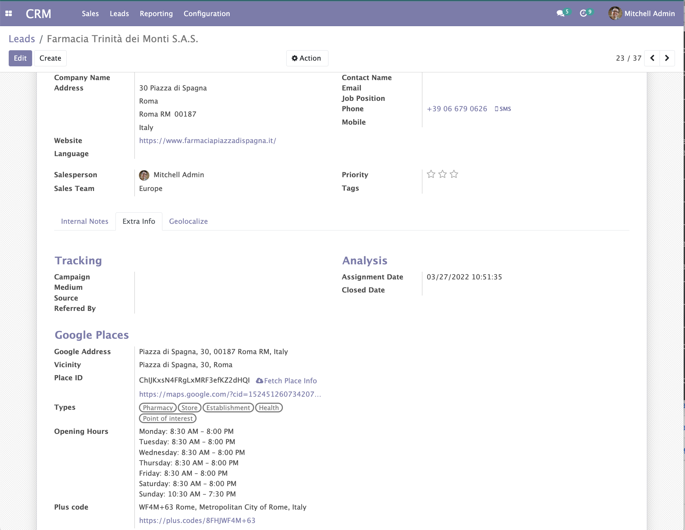
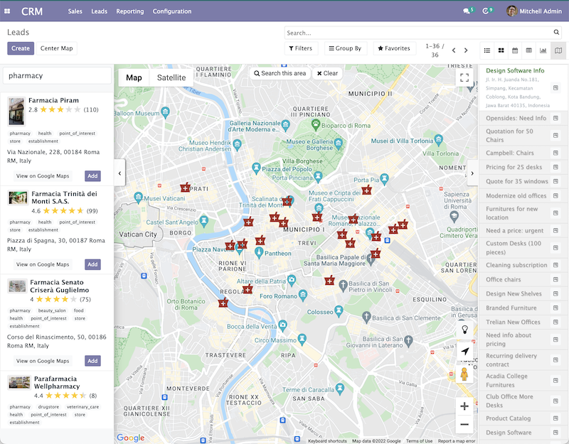
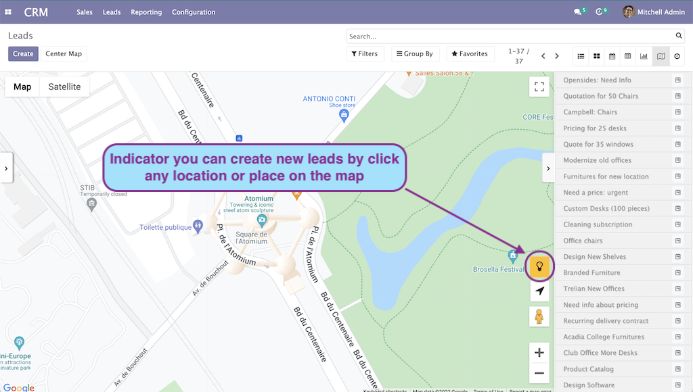
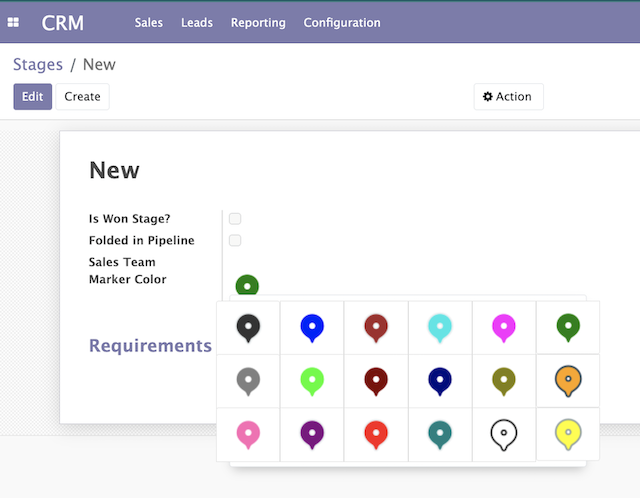

This features could help you find your leads easily from Google places service.
You can create a new opportunity or leads within Google maps view by:

New section "Google Place information" on your leads

Find any place such as coffee shop, restaurant, hotel, apartment, etc.. on any area that you want to discover

Create new record from the map by simply click any location or place. Zoom in until the indicator turned yellow

Set different marker color per stage
This module required you to configure Google API Key. For more details please check https://developers.google.com/maps/documentation/javascript/places
After you finished configure Google API Key, you need to enable the following API & Services
Support & maintenance: Yopi Angi